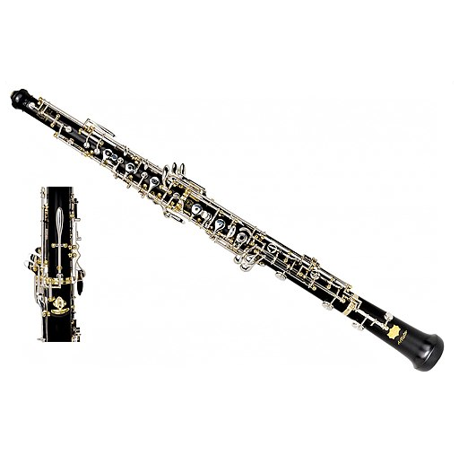

Les instruments
Nous dénichons pour vous une gamme réduite mais qualitative de plusieurs instruments.
Pour tous renseignements et prix, n'hésitez pas à nous contacter par mail à l'adresse suivant : fausseemail@anonyme.com
Les instruments à cordes sont les instruments qui produisent du son grâce à la vibration de cordes. Nous vous proposons ici 3 types d'instruments à cordes : Lien Wikipédia pour en savoir plus sur les piano Lien Wikipédia pour en savoir plus sur les guitares Lien Wikipédia pour en savoir plus sur les guitares bassesLes instruments à cordes
Les pianos

Les guitares

Les basses

Les instruments à vent
Les instruments à vent sont les instruments qui produisent du son grâce à la vibration de l'air.
Nous vous proposons ici 2 types d'instruments à vent :
Les saxophones
Lien Wikipédia pour en savoir plus sur les saxophones

- Saxophone Soprano
- Marque : Yamaha
- Modèle : YSS-875 EX

- Saxophone Alto
- Marque : Henri Selmer Paris
- Modèle : Series III GP
Les hautbois
Lien Wikipédia pour en savoir plus sur les hautbois

- Hautbois moderne
- Marque : Lorée
- Type : Semi-automatique
- 
- Hautbois moderne
- Marque : Fratelli Patricola
- Modèle : PT 1